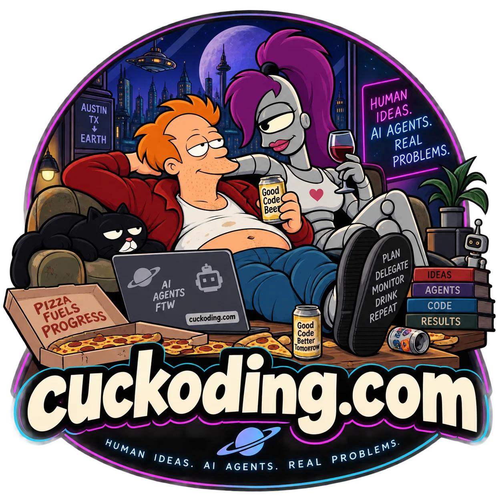
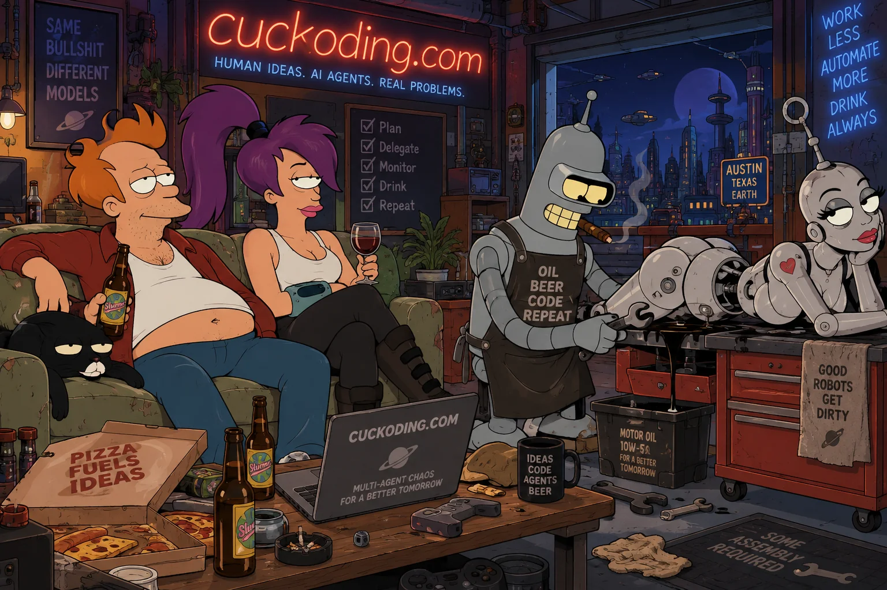
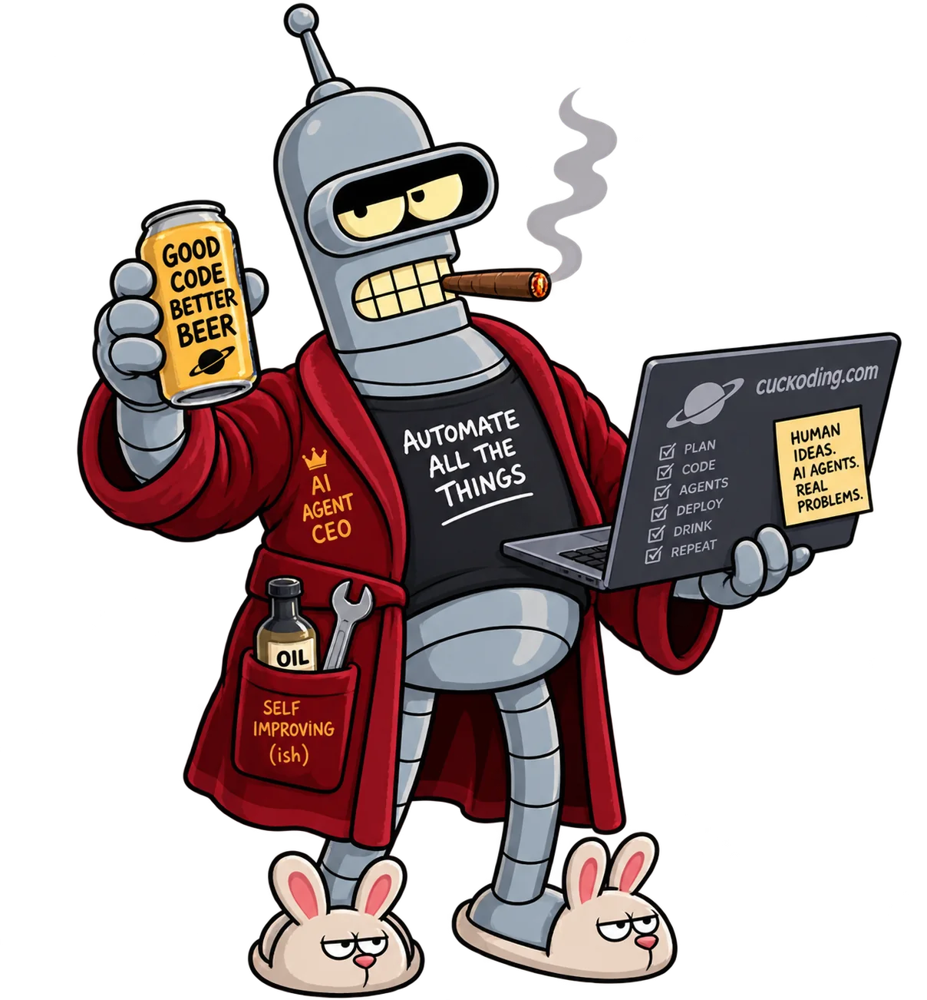
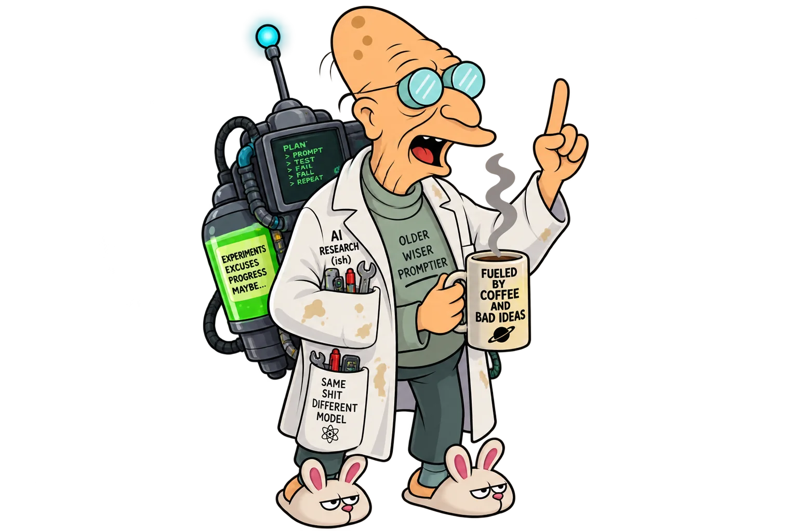
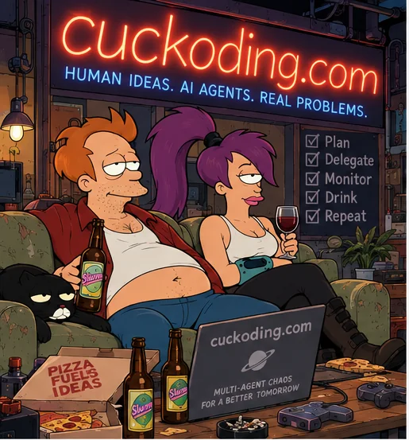
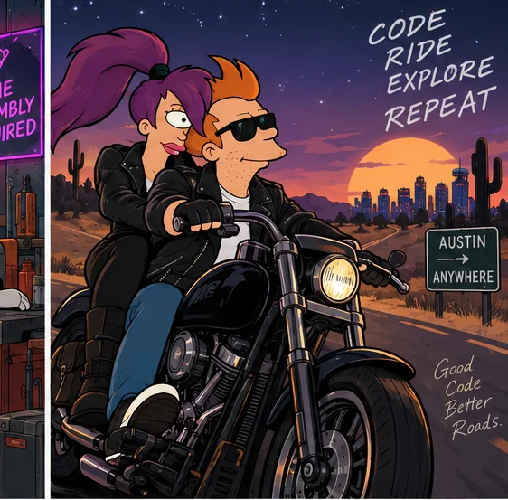
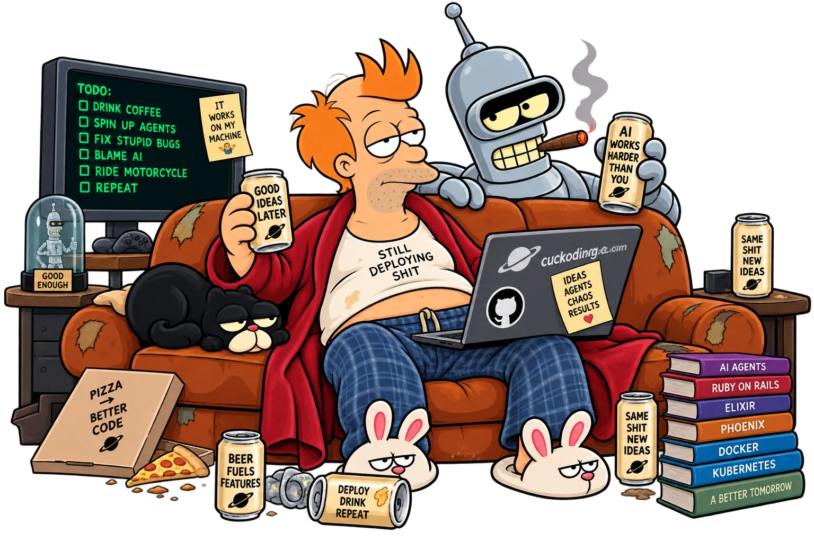
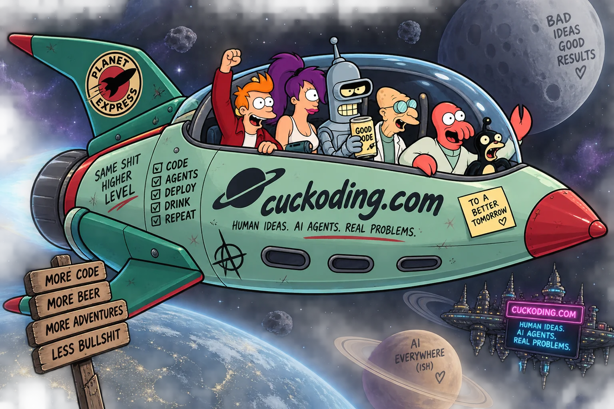

Plan the work, not the prompt.
Start with a repository, a task, and a versioned workflow. Define roles, gates, budgets, tools, and the exact evidence needed to move forward.

Cuckoding
Local-first · macOS · open source
Turn an issue into a durable workflow. Give every role a runtime, watch the work move, recover after sleep, and keep the evidence on your Mac.
Controlled beta · Apple Silicon macOS
The premise
Cuckoding coordinates coding agents as a workflow—not a pile of terminals. State survives workers. Every gate leaves evidence. Humans keep the irreversible decisions.
From issue to evidence
Start with a repository, a task, and a versioned workflow. Define roles, gates, budgets, tools, and the exact evidence needed to move forward.
Each run gets a Git worktree, branch, process group, policy snapshot, and loopback preview port. Codex and Claude Code enter through one normalized adapter boundary.
The Agent Floor shows state, role, runtime, model, elapsed time, resources, cost confidence, artifacts, findings, and safe controls—never hidden chain-of-thought.
SQLite owns the truth. Leases, checkpoints, append-only events, and ownership checks let Cuckoding reconcile interrupted work instead of pretending nothing happened.


What it can do
Everything important is durable, attributable, and reviewable.
Move independent tasks across boards without mixing branches, ports, or process ownership.
Require tests, typed artifacts, QA findings, and human approval before release handoff.
Pause, hibernate, resume, and reconcile across crashes, app restarts, and laptop sleep.
Open diffs, test reports, artifacts, usage, costs, resource samples, and the exact blocker.
Extract project lessons into readable Markdown, review them, and track where they help later runs.
Detect and govern RTK, Ponytail, XERJ, MCP servers, secret stores, metrics, and VCS hosts.
How it works
Agents do the reversible work. The control plane owns the durable story.
Cuckoding validates Git, policy, installed runtimes, and optional plugins.
Choose a versioned workflow and map roles to supported agent runtimes.
The trusted-host runner supervises processes and confines Cuckoding commands to declared paths.
Committed events drive the UI; sleep gaps and failures are reconciled from durable state.
After evidence review, a host-side service can push the branch and prepare a draft pull request.



Built from boring, durable things
One local application. One browser UI. No hosted control plane and no second frontend framework.
Honest by design
The MVP runs agent processes on your Mac. Worktrees, policy, permission grants, and human gates reduce risk—but the host runner is not a container or sandbox.

Human ideas · AI agents · real problems
Cuckoding is open source and preparing for controlled beta.
Read the source on GitHub